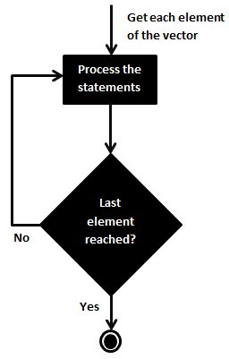

Capítulo 3 Acessando e manipulação de dados
3.1 Organização
Assista este conteúdo em Cap 2 - Organização no PVANet
Como mencionado anteriormente, vector é uma das principais estruturas do R. Um vetor é uma sequência de elementos (1…n) do mesmo tipo organizados tal qual livros em uma prateleira.
No caso abaixo temos um vetor numérico que pode ser integer ou double.
a<-c(25,17,55,3,12,315,10,2,3,11)
a## [1] 25 17 55 3 12 315 10 2 3 11| Posição | 1 | 2 | 3 | 4 | 5 | 6 | 7 | 8 | 9 | 10 |
|---|---|---|---|---|---|---|---|---|---|---|
| Elementos | 25 | 17 | 55 | 3 | 12 | 315 | 10 | 2 | 3 | 11 |
Um vetor também pode armazernar caracteres. Neste caso eles devem estar entre aspas duplas ("").
b<-c("Z","f", "7","2a","Yes","A","Ab")
b;typeof(b)## [1] "Z" "f" "7" "2a" "Yes" "A" "Ab"## [1] "character"Embora tenhamos o número 7 entre os nossos elementos do vetor acima, por estar entre aspas o número 7 não é numéric, mas caractere.
Lembrem-se que um vector é um banco de dados da mesmo tipo Logo, se você colocar um número 7 dentro dele, o R vai automaticamente convertê-lo em caractere independente de estar entre "" ou não.
| Posição | 1 | 2 | 3 | 4 | 5 | 6 | 7 |
|---|---|---|---|---|---|---|---|
| Elementos | “Z” | “f” | “7” | “2a” | “Yes” | “A” | “Ab” |
Mesmo que você tenha apenas um único numeral ele será armazenado como vector, vector de comprimento = 1. Então um único número ou um único caractere será um vector.
c<-(1)
c;typeof(c);is.vector(c)## [1] 1## [1] "double"## [1] TRUE| Posição | 1 |
|---|---|
| Elemento | “1” |
Entender a posição de cada elemento dentro de um vector é crucial! Saber a posição correta onde determinado(s) elemento(s) está(estão) facilita em muito nossa limpeza, nosso tratamento e demais passos para uma eficiente manipulação dos dados.
seq(100,50,-1)## [1] 100 99 98 97 96 95 94 93 92 91 90 89 88 87 86 85 84 83
## [19] 82 81 80 79 78 77 76 75 74 73 72 71 70 69 68 67 66 65
## [37] 64 63 62 61 60 59 58 57 56 55 54 53 52 51 50Atenção para os números dentro dos colchetes [1] [17] [33] [49]. Como mencionado em aulas passadas, eles, os colchetes, indicam a posição de determinados elementos dentro de um banco de dados.
Especificamente o [1] informa que o número 100 é o primeiro elemento, [17] informa que o número 84 é o vigésimo elemento, [33] informa que o número 68 é o trigésimo nono elemento, [49] informa que o número 52 é o trigésimo nono elemento.
3.1.1 Usando [ ] - Subscribing ou indexing
3.1.1.1 Vetores
Podemos extrapolar esta ideia de utilização de [] para acessar informações dentros dos objetos que criamos ou importamos.
d<-c("a","b","c","d","e")
d## [1] "a" "b" "c" "d" "e"| Posição | 1 | 2 | 3 | 4 | 5 |
|---|---|---|---|---|---|
| Elementos | “a” | “b” | “c” | “d” | “e” |
No vector d temos cada um dos elementos em sua respectiva posição. Para acessar um elemento específico podemos inserir o número refere à sua posição dentro de [].
Por exemplo:
d[1]## [1] "a"d[2]## [1] "b"d[3]## [1] "c"d[4]## [1] "d"d[5]## [1] "e"Importante saber que [] é muito versátil.
d[-1] # Acessa todos elementos exceto o primeiro## [1] "b" "c" "d" "e"d1<-d[3] # Atribuir o(s) elemento(s) de um vetor a outro vetor, ou criar um novo objeto de elementos já de objetos já existentes
d1## [1] "c"d[1:3] # Acessar um intervalo de elementos## [1] "a" "b" "c"d[3:5]## [1] "c" "d" "e"d[c(1,3:5)] # Acessar utilizando combinações## [1] "a" "c" "d" "e"d[c(-2,-4)] # Exceto o segundo e quanto elementos## [1] "a" "c" "e"d[-3:-5] # Exceto o intervalo entre 3 e 5## [1] "a" "b"Vamos dar mais uma olhada na importância do [].
Considere os seguintes vetores.
| Posição | 1 | 2 | 3 | 4 | 5 | 6 | 7 | 8 | 9 | 10 |
|---|---|---|---|---|---|---|---|---|---|---|
| Elemento | 50 | 34 | 11 | 7 | 24 | 631 | 20 | 4 | 7 | 21 |
| Posição | 1 | 2 | 3 | 4 | 5 | 6 | 7 | 8 | 9 | 10 |
|---|---|---|---|---|---|---|---|---|---|---|
| Elemento | 100 | 2 | 56 | 12 | 0 | 65 | 93 | 10 | 244 | 1 |
Vamos somar os dois vetores e observe que são adicionados o primeiro elemento com primeiro elemento, segundo elemento com segundo elemento e assim por diante.
Em algumas outras linguagens se você quiser fazer esse procedimento, você vai provavelmente usar um loop. Mas em R você pode simplesmente adicioná-los. Esse é o motivo do R ser linguagem vetorizada. Você pode testar qualquer método matemático (soma, divisão, booleana, lógica).
e<-c(50,34,11,7,24,631,20,4,7,21)
f<-c(100,2,56,12,0,65,93,10,244,1)
e;f## [1] 50 34 11 7 24 631 20 4 7 21## [1] 100 2 56 12 0 65 93 10 244 1e+f## [1] 150 36 67 19 24 696 113 14 251 22Neste caso funcionou tudo perfeitamente, pois nossos vetores são do mesmo tamanho.
No entanto, caso tenhamos vetores de tamanho diferentes o R vai fazer um procedimento chamado recycling of vector. O R vai fazer com que os dois vetores se encaixarem no mesmo tamanho caso sejam múltiplos. Basicamente, o R vai copiar os elementos do começo do vetor menor e adicionar ao seu fim até que fiqque do mesmo tamanho do outro vetor para, então, fazer a operação.
| Posição | 1 | 2 | 3 | 4 | 5 |
|---|---|---|---|---|---|
| Elemento | 50 | 34 | 11 | 7 | 24 |
| Posição | 1 | 2 | 3 | 4 | 5 | 6 | 7 | 8 | 9 | 10 |
|---|---|---|---|---|---|---|---|---|---|---|
| Elemento | 100 | 2 | 56 | 12 | 0 | 65 | 93 | 10 | 244 | 1 |
h<-c( 50,34,11, 7,24)
i<-c(100, 2,56,12, 0,65,93,10,244,1)
h+i## [1] 150 36 67 19 24 115 127 21 251 25h;i## [1] 50 34 11 7 24## [1] 100 2 56 12 0 65 93 10 244 1h+i## [1] 150 36 67 19 24 115 127 21 251 25E se não forem múltiplos?
Nesse caso vamos ter uma aviso, em que o R ao fazer o preenchimento dos valores faltantes vai querer saber se está certo o que estamos fazendo e emitindo um warning.
j<-c(50,34,11,7,24,631)
k<-c(100,2,56,12,0,65,93,10,244,1)
j+k## Warning in j + k: longer object length is not a multiple of shorter object
## length## [1] 150 36 67 19 24 696 143 44 255 83.1.1.2 Matrizes
Da mesma forma que utilizamos [ ] para acessar elementos específicos em um vetor, estes podem ser utilizados para acessar elementos de matrizes.
Lembrando que as matrizes possuem duas dimensões e que as dimensões são organizadas na sequência de linhas e colunas.
l<-cbind(matrix(14:1, ncol=2),matrix(1:14, ncol=2))
l## [,1] [,2] [,3] [,4]
## [1,] 14 7 1 8
## [2,] 13 6 2 9
## [3,] 12 5 3 10
## [4,] 11 4 4 11
## [5,] 10 3 5 12
## [6,] 9 2 6 13
## [7,] 8 1 7 14As linhas e colunas [linhas, colunas] são numeradas sequencialmente [x...n,y] e [x,y...n].
Podemos desta forma selecionar uma ou várias linhas e colunas de uma só vez. Para isto basta apenas numerar a linhas ou coluna requerida.
l[1,] # Apenas a primeira linhas## [1] 14 7 1 8l[,1] # Apenas a primeira coluna## [1] 14 13 12 11 10 9 8l[1:3,] # O intervalo de linhas entre 1 a 3## [,1] [,2] [,3] [,4]
## [1,] 14 7 1 8
## [2,] 13 6 2 9
## [3,] 12 5 3 10l[,1:3] # O intervalo de colunas entre 1 e 3## [,1] [,2] [,3]
## [1,] 14 7 1
## [2,] 13 6 2
## [3,] 12 5 3
## [4,] 11 4 4
## [5,] 10 3 5
## [6,] 9 2 6
## [7,] 8 1 7l[-3,] # Exceto a terceira linha## [,1] [,2] [,3] [,4]
## [1,] 14 7 1 8
## [2,] 13 6 2 9
## [3,] 11 4 4 11
## [4,] 10 3 5 12
## [5,] 9 2 6 13
## [6,] 8 1 7 14l[,-3] # Exceto a terceira coluna## [,1] [,2] [,3]
## [1,] 14 7 8
## [2,] 13 6 9
## [3,] 12 5 10
## [4,] 11 4 11
## [5,] 10 3 12
## [6,] 9 2 13
## [7,] 8 1 14l[-1:-3,] # Exceto o intervalo de linhas entre 1 a 3## [,1] [,2] [,3] [,4]
## [1,] 11 4 4 11
## [2,] 10 3 5 12
## [3,] 9 2 6 13
## [4,] 8 1 7 14l[,-1:-3] # Exceto o intervalo de colunas entre 1 e 3## [1] 8 9 10 11 12 13 14Podemos também acessar elementos específicos de uma matriz definindo o “endereço” do elemento nas linhas e colunas.
l[2,3] # Acessa apenas o elemento do cruzamento da linha 2 e coluna 3## [1] 2Para facilitar a manipulação das matrizes podemos nomear as linas e colunas. Para isso podemos utilizar as funções colnames() e rownames().
nrow(l) # Retorna o número de linhas## [1] 7ncol(l) # Retorna o número de colunas## [1] 4dim(l) # Retorna as dimnesões (n° de linas e colunas)## [1] 7 4l## [,1] [,2] [,3] [,4]
## [1,] 14 7 1 8
## [2,] 13 6 2 9
## [3,] 12 5 3 10
## [4,] 11 4 4 11
## [5,] 10 3 5 12
## [6,] 9 2 6 13
## [7,] 8 1 7 14rownames(l)<-letters[1:7] # Atribui 7 letras minúsculas sequenciais de "a" até "g" como nomes das linhas
l## [,1] [,2] [,3] [,4]
## a 14 7 1 8
## b 13 6 2 9
## c 12 5 3 10
## d 11 4 4 11
## e 10 3 5 12
## f 9 2 6 13
## g 8 1 7 14colnames(l)<-LETTERS[1:ncol(l)] # Atribui letras maiúsculas sequenciais obedecendo o número de colunas como nomes das colunas
l## A B C D
## a 14 7 1 8
## b 13 6 2 9
## c 12 5 3 10
## d 11 4 4 11
## e 10 3 5 12
## f 9 2 6 13
## g 8 1 7 14Agora podemos acessar via nomes das linhas e colunas também.
l["a",] # Apenas a primeira linhas## A B C D
## 14 7 1 8l[,"A"] # Apenas a primeira coluna## a b c d e f g
## 14 13 12 11 10 9 8l[letters[1:3],] # O intervalo de linhas entre "a" a "c"## A B C D
## a 14 7 1 8
## b 13 6 2 9
## c 12 5 3 10l[,LETTERS[1:3]] # O intervalo de colunas entre "A" e "C"## A B C
## a 14 7 1
## b 13 6 2
## c 12 5 3
## d 11 4 4
## e 10 3 5
## f 9 2 6
## g 8 1 7l[c("a","c","d"),] # Seleciona as linhas "a", "c" e "d"## A B C D
## a 14 7 1 8
## c 12 5 3 10
## d 11 4 4 11l[,c("A","C","D")] # Seleciona as colunas "a", "c" e "d"## A C D
## a 14 1 8
## b 13 2 9
## c 12 3 10
## d 11 4 11
## e 10 5 12
## f 9 6 13
## g 8 7 143.1.1.3 Arrays
Sendo muito similares aos vetores e matrizes, os arrays podem ter n dimensões.
m<-1:24
dim(m)<-c(4,3,2)
m## , , 1
##
## [,1] [,2] [,3]
## [1,] 1 5 9
## [2,] 2 6 10
## [3,] 3 7 11
## [4,] 4 8 12
##
## , , 2
##
## [,1] [,2] [,3]
## [1,] 13 17 21
## [2,] 14 18 22
## [3,] 15 19 23
## [4,] 16 20 24# ou
m<-array(1:24,c(4,3,2))
m## , , 1
##
## [,1] [,2] [,3]
## [1,] 1 5 9
## [2,] 2 6 10
## [3,] 3 7 11
## [4,] 4 8 12
##
## , , 2
##
## [,1] [,2] [,3]
## [1,] 13 17 21
## [2,] 14 18 22
## [3,] 15 19 23
## [4,] 16 20 24m[1,,] # Retorna as primeiras linhas do array## [,1] [,2]
## [1,] 1 13
## [2,] 5 17
## [3,] 9 21m[,2,] # Retorna as segundas colunas do array## [,1] [,2]
## [1,] 5 17
## [2,] 6 18
## [3,] 7 19
## [4,] 8 20m[1,2,] # Retorna as intersecções entre as primeiras linhas com as segundas colunas## [1] 5 17m[1,2,2] # Retorna as intersecções entre a primeira linha com segunda coluna da sugunda camada## [1] 173.1.1.4 Data Frame
Sendo semelhantes às matrizes, os data frames pode serm acessados pelo número das linhas ou colunas.
Equipes<-c("Flamengo", "Santos", "Palmeiras", "Grêmio", "Athletico Paranaense", "Săo Paulo", "Internacional", "Corinthians", "Fortaleza", "Goiás", "Bahia", "Vasco da Gama", "Atlético Mineiro", "Fluminense", "Botafogo", "Ceará", "Cruzeiro", "CSA", "Chapecoense", "Avaí")
Jogos<-c("38", "38", "38", "38", "38", "38", "38", "38", "38", "38", "38", "38", "38", "38", "38", "38", "38", "38", "38", "38")
Vitórias<-c("28", "22", "21", "19", "18", "17", "16", "14", "15", "15", "12", "12", "13", "12", "13", "10", "7", "8", "7", "3")
Empates<-c("6", "8", "11", "8", "10", "12", "9", "14", "8", "7", "13", "13", "9", "10", "4", "9", "15", "8", "11", "11")
Derrotas<-c("4", "8", "6", "11", "10", "9", "13", "10", "15", "16", "13", "13", "16", "16", "21", "19", "16", "22", "20", "24")
Gols.Pró<-c("86", "60", "61", "64", "51", "39", "44", "42", "50", "46", "44", "39", "45", "38", "31", "36", "27", "24", "31", "18")
Gols.Contra<-c("37", "33", "32", "39", "32", "30", "39", "34", "49", "64", "43", "45", "49", "46", "45", "41", "46", "58", "52", "62")
Pontos<-c("90", "74", "74", "65", "64", "63", "57", "56", "53", "52", "49", "49", "48", "46", "43", "39", "36", "32", "32", "20")
Saldo.de.Gols<-c("49", "27", "29", "25", "19", "9", "5", "8", "1", "-18", "1", "-6", "-4", "-8", "-14", "-5", "-19", "-34", "-21", "-44")
Aprov.<-c("79", "65", "65", "57", "56", "55", "5", "49", "46", "46", "43", "43", "42", "4", "38", "34", "32", "28", "28", "18")
Destino<-c("Libertadores", "Libertadores", "Libertadores", "Libertadores", "Libertadores", "Libertadores", "Libertadores", "Libertadores", "Sulamericana", "Sulamericana", "Sulamericana", "Sulamericana", "Sulamericana", "Sulamericana", "NA", "NA", "Rebaixado", "Rebaixado", "Rebaixado", "Rebaixado")
Campeonato.Brasileiro.2019<-as.data.frame(cbind(Equipes,Jogos,Vitórias,Empates,Derrotas,Gols.Pró,Gols.Contra,Pontos,Saldo.de.Gols, Aprov., Destino))| Equipes | Jogos | Vitórias | Empates | Derrotas | Gols Pró | Gols Contra | Pontos | Saldo de Gols | Aprov | Destino |
|---|---|---|---|---|---|---|---|---|---|---|
| Flamengo | 38 | 28 | 6 | 4 | 86 | 37 | 90 | 49 | 79 | Libertadores |
| Santos | 38 | 22 | 8 | 8 | 60 | 33 | 74 | 27 | 65 | Libertadores |
| Palmeiras | 38 | 21 | 11 | 6 | 61 | 32 | 74 | 29 | 65 | Libertadores |
| Grêmio | 38 | 19 | 8 | 11 | 64 | 39 | 65 | 25 | 57 | Libertadores |
| Athletico Paranaense | 38 | 18 | 10 | 10 | 51 | 32 | 64 | 19 | 56 | Libertadores |
| Sao Paulo | 38 | 17 | 12 | 9 | 39 | 30 | 63 | 9 | 55 | Libertadores |
| Internacional | 38 | 16 | 9 | 13 | 44 | 39 | 57 | 5 | 5 | Libertadores |
| Corinthians | 38 | 14 | 14 | 10 | 42 | 34 | 56 | 8 | 49 | Libertadores |
| Fortaleza | 38 | 15 | 8 | 15 | 50 | 49 | 53 | 1 | 46 | Sulamericana |
| Goiás | 38 | 15 | 7 | 16 | 46 | 64 | 52 | -18 | 46 | Sulamericana |
| Bahia | 38 | 12 | 13 | 13 | 44 | 43 | 49 | 1 | 43 | Sulamericana |
| Vasco da Gama | 38 | 12 | 13 | 13 | 39 | 45 | 49 | -6 | 43 | Sulamericana |
| Atlético Mineiro | 38 | 13 | 9 | 16 | 45 | 49 | 48 | -4 | 42 | Sulamericana |
| Fluminense | 38 | 12 | 10 | 16 | 38 | 46 | 46 | -8 | 4 | Sulamericana |
| Botafogo | 38 | 13 | 4 | 21 | 31 | 45 | 43 | -14 | 38 | NA |
| Ceará | 38 | 10 | 9 | 19 | 36 | 41 | 39 | -5 | 34 | NA |
| Cruzeiro | 38 | 7 | 15 | 16 | 27 | 46 | 36 | -19 | 32 | Rebaixado |
| CSA | 38 | 8 | 8 | 22 | 24 | 58 | 32 | -34 | 28 | Rebaixado |
| Chapecoense | 38 | 7 | 11 | 20 | 31 | 52 | 32 | -21 | 28 | Rebaixado |
| Avaí | 38 | 3 | 11 | 24 | 18 | 62 | 20 | -44 | 18 | Rebaixado |
Campeonato.Brasileiro.2019[1,] # Retorna a primeira linha do data frame## Equipes Jogos Vitórias Empates Derrotas Gols.Pró Gols.Contra Pontos
## 1 Flamengo 38 28 6 4 86 37 90
## Saldo.de.Gols Aprov. Destino
## 1 49 79 LibertadoresCampeonato.Brasileiro.2019[,1] # Retorna a primeira coluna do data frame## [1] "Flamengo" "Santos" "Palmeiras"
## [4] "Grêmio" "Athletico Paranaense" "Sao Paulo"
## [7] "Internacional" "Corinthians" "Fortaleza"
## [10] "Goiás" "Bahia" "Vasco da Gama"
## [13] "Atlético Mineiro" "Fluminense" "Botafogo"
## [16] "Ceará" "Cruzeiro" "CSA"
## [19] "Chapecoense" "Avaí"Todas as outras combinações utilizadas nas matrizes podem ser utilizadas aqui nos data frames.
No entanto, os data frames possuem uma outra “vantagem” sobre as matrizes. Além de armazenar elementos de diferentes tipos (numeric, character, logical e etc), eles também podemser acessados utilizando $.
Campeonato.Brasileiro.2019$Equipes # Retorna os elementos da coluna "Equipes"## [1] "Flamengo" "Santos" "Palmeiras"
## [4] "Grêmio" "Athletico Paranaense" "Sao Paulo"
## [7] "Internacional" "Corinthians" "Fortaleza"
## [10] "Goiás" "Bahia" "Vasco da Gama"
## [13] "Atlético Mineiro" "Fluminense" "Botafogo"
## [16] "Ceará" "Cruzeiro" "CSA"
## [19] "Chapecoense" "Avaí"Campeonato.Brasileiro.2019$Vitórias # Retorna os elementos da coluna "Vitórias"## [1] "28" "22" "21" "19" "18" "17" "16" "14" "15" "15" "12" "12" "13" "12" "13"
## [16] "10" "7" "8" "7" "3"Campeonato.Brasileiro.2019$Gols.Pró # Retorna os elementos da coluna "Gols.Pró"## [1] "86" "60" "61" "64" "51" "39" "44" "42" "50" "46" "44" "39" "45" "38" "31"
## [16] "36" "27" "24" "31" "18"Campeonato.Brasileiro.2019$Saldo.de.Gols # Retorna os elementos da coluna "Saldo.de.Gols"## [1] "49" "27" "29" "25" "19" "9" "5" "8" "1" "-18" "1" "-6"
## [13] "-4" "-8" "-14" "-5" "-19" "-34" "-21" "-44"Campeonato.Brasileiro.2019$Destino # Retorna os elementos da coluna "Destino"## [1] "Libertadores" "Libertadores" "Libertadores" "Libertadores" "Libertadores"
## [6] "Libertadores" "Libertadores" "Libertadores" "Sulamericana" "Sulamericana"
## [11] "Sulamericana" "Sulamericana" "Sulamericana" "Sulamericana" "NA"
## [16] "NA" "Rebaixado" "Rebaixado" "Rebaixado" "Rebaixado"Campeonato.Brasileiro.2019$Equipes[2] # Retorna o segundo elemento da coluna "Nome"## [1] "Santos"Campeonato.Brasileiro.2019$Vitórias[5] # Retorna o quinto elemento da coluna "Vitórias"## [1] "18"Campeonato.Brasileiro.2019$Gols.Pró[3] # Retorna os elementos da coluna "Gols.Pró"## [1] "61"Campeonato.Brasileiro.2019$Saldo.de.Gols[1] # Retorna os elementos da coluna "Nivel.deR"## [1] "49"Campeonato.Brasileiro.2019$Destino[10] # Retorna os elementos da décima coluna "Destino"## [1] "Sulamericana"Outra maneira de acessar informações pode através [].
Campeonato.Brasileiro.2019[Campeonato.Brasileiro.2019$Equipes=="Flamengo",] # Retorna apenas as informações da coluna "Equipes" que atendem o critério "Flamengo"## Equipes Jogos Vitórias Empates Derrotas Gols.Pró Gols.Contra Pontos
## 1 Flamengo 38 28 6 4 86 37 90
## Saldo.de.Gols Aprov. Destino
## 1 49 79 Libertadoressplit(Campeonato.Brasileiro.2019,Destino) # Retorna apenas as informações da coluna "Destino" que atendem o critério "Engenharia Agrícola"## $Libertadores
## Equipes Jogos Vitórias Empates Derrotas Gols.Pró Gols.Contra
## 1 Flamengo 38 28 6 4 86 37
## 2 Santos 38 22 8 8 60 33
## 3 Palmeiras 38 21 11 6 61 32
## 4 Grêmio 38 19 8 11 64 39
## 5 Athletico Paranaense 38 18 10 10 51 32
## 6 Sao Paulo 38 17 12 9 39 30
## 7 Internacional 38 16 9 13 44 39
## 8 Corinthians 38 14 14 10 42 34
## Pontos Saldo.de.Gols Aprov. Destino
## 1 90 49 79 Libertadores
## 2 74 27 65 Libertadores
## 3 74 29 65 Libertadores
## 4 65 25 57 Libertadores
## 5 64 19 56 Libertadores
## 6 63 9 55 Libertadores
## 7 57 5 5 Libertadores
## 8 56 8 49 Libertadores
##
## $`NA`
## Equipes Jogos Vitórias Empates Derrotas Gols.Pró Gols.Contra Pontos
## 15 Botafogo 38 13 4 21 31 45 43
## 16 Ceará 38 10 9 19 36 41 39
## Saldo.de.Gols Aprov. Destino
## 15 -14 38 NA
## 16 -5 34 NA
##
## $Rebaixado
## Equipes Jogos Vitórias Empates Derrotas Gols.Pró Gols.Contra Pontos
## 17 Cruzeiro 38 7 15 16 27 46 36
## 18 CSA 38 8 8 22 24 58 32
## 19 Chapecoense 38 7 11 20 31 52 32
## 20 Avaí 38 3 11 24 18 62 20
## Saldo.de.Gols Aprov. Destino
## 17 -19 32 Rebaixado
## 18 -34 28 Rebaixado
## 19 -21 28 Rebaixado
## 20 -44 18 Rebaixado
##
## $Sulamericana
## Equipes Jogos Vitórias Empates Derrotas Gols.Pró Gols.Contra
## 9 Fortaleza 38 15 8 15 50 49
## 10 Goiás 38 15 7 16 46 64
## 11 Bahia 38 12 13 13 44 43
## 12 Vasco da Gama 38 12 13 13 39 45
## 13 Atlético Mineiro 38 13 9 16 45 49
## 14 Fluminense 38 12 10 16 38 46
## Pontos Saldo.de.Gols Aprov. Destino
## 9 53 1 46 Sulamericana
## 10 52 -18 46 Sulamericana
## 11 49 1 43 Sulamericana
## 12 49 -6 43 Sulamericana
## 13 48 -4 42 Sulamericana
## 14 46 -8 4 SulamericanaAlterando elementos dentro do data frame.
Campeonato.Brasileiro.2019$Destino # Retorna apenas as informações da coluna "Destino" ## [1] "Libertadores" "Libertadores" "Libertadores" "Libertadores" "Libertadores"
## [6] "Libertadores" "Libertadores" "Libertadores" "Sulamericana" "Sulamericana"
## [11] "Sulamericana" "Sulamericana" "Sulamericana" "Sulamericana" "NA"
## [16] "NA" "Rebaixado" "Rebaixado" "Rebaixado" "Rebaixado"Campeonato.Brasileiro.2019$Destino[Campeonato.Brasileiro.2019$Destino=="NA"]<-"Lugar Algum"
# Substitui "Libertadores" na coluna "Destino" por "Liberta".Veja como ficou com a informação alterada.
| Equipes | Jogos | Vitórias | Empates | Derrotas | Gols Pró | Gols Contra | Pontos | Saldo de Gols | Aprov | Destino |
|---|---|---|---|---|---|---|---|---|---|---|
| Flamengo | 38 | 28 | 6 | 4 | 86 | 37 | 90 | 49 | 79 | Libertadores |
| Santos | 38 | 22 | 8 | 8 | 60 | 33 | 74 | 27 | 65 | Libertadores |
| Palmeiras | 38 | 21 | 11 | 6 | 61 | 32 | 74 | 29 | 65 | Libertadores |
| Grêmio | 38 | 19 | 8 | 11 | 64 | 39 | 65 | 25 | 57 | Libertadores |
| Athletico Paranaense | 38 | 18 | 10 | 10 | 51 | 32 | 64 | 19 | 56 | Libertadores |
| Sao Paulo | 38 | 17 | 12 | 9 | 39 | 30 | 63 | 9 | 55 | Libertadores |
| Internacional | 38 | 16 | 9 | 13 | 44 | 39 | 57 | 5 | 5 | Libertadores |
| Corinthians | 38 | 14 | 14 | 10 | 42 | 34 | 56 | 8 | 49 | Libertadores |
| Fortaleza | 38 | 15 | 8 | 15 | 50 | 49 | 53 | 1 | 46 | Sulamericana |
| Goiás | 38 | 15 | 7 | 16 | 46 | 64 | 52 | -18 | 46 | Sulamericana |
| Bahia | 38 | 12 | 13 | 13 | 44 | 43 | 49 | 1 | 43 | Sulamericana |
| Vasco da Gama | 38 | 12 | 13 | 13 | 39 | 45 | 49 | -6 | 43 | Sulamericana |
| Atlético Mineiro | 38 | 13 | 9 | 16 | 45 | 49 | 48 | -4 | 42 | Sulamericana |
| Fluminense | 38 | 12 | 10 | 16 | 38 | 46 | 46 | -8 | 4 | Sulamericana |
| Botafogo | 38 | 13 | 4 | 21 | 31 | 45 | 43 | -14 | 38 | Lugar Algum |
| Ceará | 38 | 10 | 9 | 19 | 36 | 41 | 39 | -5 | 34 | Lugar Algum |
| Cruzeiro | 38 | 7 | 15 | 16 | 27 | 46 | 36 | -19 | 32 | Rebaixado |
| CSA | 38 | 8 | 8 | 22 | 24 | 58 | 32 | -34 | 28 | Rebaixado |
| Chapecoense | 38 | 7 | 11 | 20 | 31 | 52 | 32 | -21 | 28 | Rebaixado |
| Avaí | 38 | 3 | 11 | 24 | 18 | 62 | 20 | -44 | 18 | Rebaixado |
Vamos expurgar remover o Vasco da Gama da nossa lista.
Campeonato.Brasileiro.2019$Equipes # Retorna apenas as informações da coluna "Equipes" ## [1] "Flamengo" "Santos" "Palmeiras"
## [4] "Grêmio" "Athletico Paranaense" "Sao Paulo"
## [7] "Internacional" "Corinthians" "Fortaleza"
## [10] "Goiás" "Bahia" "Vasco da Gama"
## [13] "Atlético Mineiro" "Fluminense" "Botafogo"
## [16] "Ceará" "Cruzeiro" "CSA"
## [19] "Chapecoense" "Avaí"Campeonato.Brasileiro.2019[Campeonato.Brasileiro.2019$Equipes!="Vasco da Gama",] #Seleciona tudo exceto aquilo que for de "Grêmio"## Equipes Jogos Vitórias Empates Derrotas Gols.Pró Gols.Contra
## 1 Flamengo 38 28 6 4 86 37
## 2 Santos 38 22 8 8 60 33
## 3 Palmeiras 38 21 11 6 61 32
## 4 Grêmio 38 19 8 11 64 39
## 5 Athletico Paranaense 38 18 10 10 51 32
## 6 Sao Paulo 38 17 12 9 39 30
## 7 Internacional 38 16 9 13 44 39
## 8 Corinthians 38 14 14 10 42 34
## 9 Fortaleza 38 15 8 15 50 49
## 10 Goiás 38 15 7 16 46 64
## 11 Bahia 38 12 13 13 44 43
## 13 Atlético Mineiro 38 13 9 16 45 49
## 14 Fluminense 38 12 10 16 38 46
## 15 Botafogo 38 13 4 21 31 45
## 16 Ceará 38 10 9 19 36 41
## 17 Cruzeiro 38 7 15 16 27 46
## 18 CSA 38 8 8 22 24 58
## 19 Chapecoense 38 7 11 20 31 52
## 20 Avaí 38 3 11 24 18 62
## Pontos Saldo.de.Gols Aprov. Destino
## 1 90 49 79 Libertadores
## 2 74 27 65 Libertadores
## 3 74 29 65 Libertadores
## 4 65 25 57 Libertadores
## 5 64 19 56 Libertadores
## 6 63 9 55 Libertadores
## 7 57 5 5 Libertadores
## 8 56 8 49 Libertadores
## 9 53 1 46 Sulamericana
## 10 52 -18 46 Sulamericana
## 11 49 1 43 Sulamericana
## 13 48 -4 42 Sulamericana
## 14 46 -8 4 Sulamericana
## 15 43 -14 38 Lugar Algum
## 16 39 -5 34 Lugar Algum
## 17 36 -19 32 Rebaixado
## 18 32 -34 28 Rebaixado
## 19 32 -21 28 Rebaixado
## 20 20 -44 18 Rebaixado| Equipes | Jogos | Vitórias | Empates | Derrotas | Gols Pró | Gols Contra | Pontos | Saldo de Gols | Aprov | Destino |
|---|---|---|---|---|---|---|---|---|---|---|
| Flamengo | 38 | 28 | 6 | 4 | 86 | 37 | 90 | 49 | 79 | Libertadores |
| Santos | 38 | 22 | 8 | 8 | 60 | 33 | 74 | 27 | 65 | Libertadores |
| Palmeiras | 38 | 21 | 11 | 6 | 61 | 32 | 74 | 29 | 65 | Libertadores |
| Grêmio | 38 | 19 | 8 | 11 | 64 | 39 | 65 | 25 | 57 | Libertadores |
| Athletico Paranaense | 38 | 18 | 10 | 10 | 51 | 32 | 64 | 19 | 56 | Libertadores |
| Sao Paulo | 38 | 17 | 12 | 9 | 39 | 30 | 63 | 9 | 55 | Libertadores |
| Internacional | 38 | 16 | 9 | 13 | 44 | 39 | 57 | 5 | 5 | Libertadores |
| Corinthians | 38 | 14 | 14 | 10 | 42 | 34 | 56 | 8 | 49 | Libertadores |
| Fortaleza | 38 | 15 | 8 | 15 | 50 | 49 | 53 | 1 | 46 | Sulamericana |
| Goiás | 38 | 15 | 7 | 16 | 46 | 64 | 52 | -18 | 46 | Sulamericana |
| Bahia | 38 | 12 | 13 | 13 | 44 | 43 | 49 | 1 | 43 | Sulamericana |
| Vasco da Gama | 38 | 12 | 13 | 13 | 39 | 45 | 49 | -6 | 43 | Sulamericana |
| Atlético Mineiro | 38 | 13 | 9 | 16 | 45 | 49 | 48 | -4 | 42 | Sulamericana |
| Fluminense | 38 | 12 | 10 | 16 | 38 | 46 | 46 | -8 | 4 | Sulamericana |
| Botafogo | 38 | 13 | 4 | 21 | 31 | 45 | 43 | -14 | 38 | Lugar Algum |
| Ceará | 38 | 10 | 9 | 19 | 36 | 41 | 39 | -5 | 34 | Lugar Algum |
| Cruzeiro | 38 | 7 | 15 | 16 | 27 | 46 | 36 | -19 | 32 | Rebaixado |
| CSA | 38 | 8 | 8 | 22 | 24 | 58 | 32 | -34 | 28 | Rebaixado |
| Chapecoense | 38 | 7 | 11 | 20 | 31 | 52 | 32 | -21 | 28 | Rebaixado |
| Avaí | 38 | 3 | 11 | 24 | 18 | 62 | 20 | -44 | 18 | Rebaixado |
Atendendo a pedidos, vamos continuar brevemente com manipulação de dados em data.frame.
As funções grep, grepl, regexpr, gregexpr e regexec busca por elementos de um objeto que coincidem com um argumento padrão.
3.1.2 grep()
grep("Lugar Algum", Campeonato.Brasileiro.2019$Destino) # retorna as posições de tudo no vetor Campeonato.Brasileiro.2019$Destino que coincide com Lugar Algum ## [1] 15 16grep("Libetadores|Lugar Algum", Campeonato.Brasileiro.2019$Destino) # retorna as posições de tudo no vetor Campeonato.Brasileiro.2019$Destino que coincide com Libetadores ou Lugar Algum## [1] 15 16grep("Lugar Algum", Campeonato.Brasileiro.2019$Destino) # retorna as posições de tudo no vetor Campeonato.Brasileiro.2019$Destino que coincide com Lugar Algum ## [1] 15 16Campeonato.Brasileiro.2019$Destino[15]<-"lugar algum" #Substitui a 15ª posição por lugar algum"Execute o comando grepanteior novamente e veja as diferenças.
| Equipes | Jogos | Vitórias | Empates | Derrotas | Gols.Pró | Gols.Contra | Pontos | Saldo.de.Gols | Aprov. | Destino |
|---|---|---|---|---|---|---|---|---|---|---|
| Flamengo | 38 | 28 | 6 | 4 | 86 | 37 | 90 | 49 | 79 | Libertadores |
| Santos | 38 | 22 | 8 | 8 | 60 | 33 | 74 | 27 | 65 | Libertadores |
| Palmeiras | 38 | 21 | 11 | 6 | 61 | 32 | 74 | 29 | 65 | Libertadores |
| Grêmio | 38 | 19 | 8 | 11 | 64 | 39 | 65 | 25 | 57 | Libertadores |
| Athletico Paranaense | 38 | 18 | 10 | 10 | 51 | 32 | 64 | 19 | 56 | Libertadores |
| Sao Paulo | 38 | 17 | 12 | 9 | 39 | 30 | 63 | 9 | 55 | Libertadores |
| Internacional | 38 | 16 | 9 | 13 | 44 | 39 | 57 | 5 | 5 | Libertadores |
| Corinthians | 38 | 14 | 14 | 10 | 42 | 34 | 56 | 8 | 49 | Libertadores |
| Fortaleza | 38 | 15 | 8 | 15 | 50 | 49 | 53 | 1 | 46 | Sulamericana |
| Goiás | 38 | 15 | 7 | 16 | 46 | 64 | 52 | -18 | 46 | Sulamericana |
| Bahia | 38 | 12 | 13 | 13 | 44 | 43 | 49 | 1 | 43 | Sulamericana |
| Vasco da Gama | 38 | 12 | 13 | 13 | 39 | 45 | 49 | -6 | 43 | Sulamericana |
| Atlético Mineiro | 38 | 13 | 9 | 16 | 45 | 49 | 48 | -4 | 42 | Sulamericana |
| Fluminense | 38 | 12 | 10 | 16 | 38 | 46 | 46 | -8 | 4 | Sulamericana |
| Botafogo | 38 | 13 | 4 | 21 | 31 | 45 | 43 | -14 | 38 | lugar algum |
| Ceará | 38 | 10 | 9 | 19 | 36 | 41 | 39 | -5 | 34 | Lugar Algum |
| Cruzeiro | 38 | 7 | 15 | 16 | 27 | 46 | 36 | -19 | 32 | Rebaixado |
| CSA | 38 | 8 | 8 | 22 | 24 | 58 | 32 | -34 | 28 | Rebaixado |
| Chapecoense | 38 | 7 | 11 | 20 | 31 | 52 | 32 | -21 | 28 | Rebaixado |
| Avaí | 38 | 3 | 11 | 24 | 18 | 62 | 20 | -44 | 18 | Rebaixado |
grep("[L l]ugar [A a]lgum",Campeonato.Brasileiro.2019$Destino) # retorna as posições de tudo no vetor Alunos.Eng792$Curso que coincide com Nutrição ou nutrição## [1] 15 16la <-grep("lugar algum", Campeonato.Brasileiro.2019$Destino)
LA <- grep("Lugar Algum", Campeonato.Brasileiro.2019$Destino)
str(la);str(LA) # mostra a estrutura de um objeto## int 15## int 16setdiff(la, LA) #Identifica a difença entre X e Y## [1] 15setdiff(LA, la) ## [1] 16Campeonato.Brasileiro.2019$Equipes[1]## [1] "Flamengo"grep("Flamengo", Campeonato.Brasileiro.2019$Equipes, value = TRUE)## [1] "Flamengo"3.1.3 grepl()
grepl("Flamengo", Campeonato.Brasileiro.2019$Equipes) # Retorna valores lógicos de acordo com o critério estabelecido## [1] TRUE FALSE FALSE FALSE FALSE FALSE FALSE FALSE FALSE FALSE FALSE FALSE
## [13] FALSE FALSE FALSE FALSE FALSE FALSE FALSE FALSE3.1.4 sub() e gsub()
sub("Fla", "fla", Campeonato.Brasileiro.2019$Equipes) #Substitui Fla por fla naquilo que começa com Fla## [1] "flamengo" "Santos" "Palmeiras"
## [4] "Grêmio" "Athletico Paranaense" "Sao Paulo"
## [7] "Internacional" "Corinthians" "Fortaleza"
## [10] "Goiás" "Bahia" "Vasco da Gama"
## [13] "Atlético Mineiro" "Fluminense" "Botafogo"
## [16] "Ceará" "Cruzeiro" "CSA"
## [19] "Chapecoense" "Avaí"gsub("Atlé|Athle", "Atlé", Campeonato.Brasileiro.2019$Equipes) #Substitui Atlé ou Athle por Atlé naquilo que contém com Atlé ou Athle## [1] "Flamengo" "Santos" "Palmeiras"
## [4] "Grêmio" "Atlético Paranaense" "Sao Paulo"
## [7] "Internacional" "Corinthians" "Fortaleza"
## [10] "Goiás" "Bahia" "Vasco da Gama"
## [13] "Atlético Mineiro" "Fluminense" "Botafogo"
## [16] "Ceará" "Cruzeiro" "CSA"
## [19] "Chapecoense" "Avaí"Alguns elementos especiais podem ser encontrados no R como: Infinito positivo ou negativo (-Inf e Inf), elementos “não número” (NaN - Not a Number) e valores ausentes (NA, Not Available).
3/0## [1] Inf-3/0## [1] -Infx<-Inf;x## [1] Infy<-(-Inf);y## [1] -Inf0/0## [1] NaNInf-Inf## [1] NaNCampeonato.Brasileiro.2019[Campeonato.Brasileiro.2019<=10]<-NA| Equipes | Jogos | Vitórias | Empates | Derrotas | Gols.Pró | Gols.Contra | Pontos | Saldo.de.Gols | Aprov. | Destino |
|---|---|---|---|---|---|---|---|---|---|---|
| Flamengo | 38 | 28 | 6 | 4 | 86 | 37 | 90 | 49 | 79 | Libertadores |
| Santos | 38 | 22 | 8 | 8 | 60 | 33 | 74 | 27 | 65 | Libertadores |
| Palmeiras | 38 | 21 | 11 | 6 | 61 | 32 | 74 | 29 | 65 | Libertadores |
| Grêmio | 38 | 19 | 8 | 11 | 64 | 39 | 65 | 25 | 57 | Libertadores |
| Athletico Paranaense | 38 | 18 | NA | NA | 51 | 32 | 64 | 19 | 56 | Libertadores |
| Sao Paulo | 38 | 17 | 12 | 9 | 39 | 30 | 63 | 9 | 55 | Libertadores |
| Internacional | 38 | 16 | 9 | 13 | 44 | 39 | 57 | 5 | 5 | Libertadores |
| Corinthians | 38 | 14 | 14 | NA | 42 | 34 | 56 | 8 | 49 | Libertadores |
| Fortaleza | 38 | 15 | 8 | 15 | 50 | 49 | 53 | NA | 46 | Sulamericana |
| Goiás | 38 | 15 | 7 | 16 | 46 | 64 | 52 | NA | 46 | Sulamericana |
| Bahia | 38 | 12 | 13 | 13 | 44 | 43 | 49 | NA | 43 | Sulamericana |
| Vasco da Gama | 38 | 12 | 13 | 13 | 39 | 45 | 49 | NA | 43 | Sulamericana |
| Atlético Mineiro | 38 | 13 | 9 | 16 | 45 | 49 | 48 | NA | 42 | Sulamericana |
| Fluminense | 38 | 12 | NA | 16 | 38 | 46 | 46 | NA | 4 | Sulamericana |
| Botafogo | 38 | 13 | 4 | 21 | 31 | 45 | 43 | NA | 38 | lugar algum |
| Ceará | 38 | NA | 9 | 19 | 36 | 41 | 39 | NA | 34 | Lugar Algum |
| Cruzeiro | 38 | 7 | 15 | 16 | 27 | 46 | 36 | NA | 32 | Rebaixado |
| CSA | 38 | 8 | 8 | 22 | 24 | 58 | 32 | NA | 28 | Rebaixado |
| Chapecoense | 38 | 7 | 11 | 20 | 31 | 52 | 32 | NA | 28 | Rebaixado |
| Avaí | 38 | 3 | 11 | 24 | 18 | 62 | 20 | NA | 18 | Rebaixado |
any(is.na(Campeonato.Brasileiro.2019))## [1] TRUEIdentificando onde estão os valores que atendem critérios desejados.
which(is.na(Campeonato.Brasileiro.2019), arr.ind=TRUE)## row col
## [1,] 16 3
## [2,] 5 4
## [3,] 14 4
## [4,] 5 5
## [5,] 8 5
## [6,] 9 9
## [7,] 10 9
## [8,] 11 9
## [9,] 12 9
## [10,] 13 9
## [11,] 14 9
## [12,] 15 9
## [13,] 16 9
## [14,] 17 9
## [15,] 18 9
## [16,] 19 9
## [17,] 20 9which((Campeonato.Brasileiro.2019<1), arr.ind=TRUE)## row col3.2 Operadores
Assista este conteúdo em Cap 2 - Operadores no PVANet
O R tem vários operadores, tais quais outras linguagens, que nos permitem realizar procedimentos aritiméticos, lógicos ou relacionais.
Os operadores aritméticos atuam em 2 elementos (x e y) e retorna respostas lógicas. Estes elementos, pos sua vez, podem ser de modo (mode()) numéricos ou complexos e também variáveis lógicas.
| Símbolo | Operação |
|---|---|
| + | adição |
| - | subtração |
| * | multiplicação |
| / | divisão |
| ^ | potência |
| %% | resto da divisão |
| %/% | divisão inteira |
x<-2;y<-3
x+y## [1] 5x-y## [1] -1x*y## [1] 6y/x## [1] 1.5y%/%x## [1] 1y%%x## [1] 1y^x## [1] 9Os operadores de comparações atuam em cada elemento de 2 objetos sob comparação (fazendo o recycling se necessário) retornando um objeto do mesmo tamanho.
| Símbolo | Relação |
|---|---|
| < | menor que |
| > | maior que |
| <= | menor ou igual |
| >= | maior ou igual |
| == | igual |
| != | diferente |
x<-1:3;y<-1:3
x>y## [1] FALSE FALSE FALSEx<y## [1] FALSE FALSE FALSEx*y## [1] 1 4 9y>=x## [1] TRUE TRUE TRUEy<=x## [1] TRUE TRUE TRUEy==x## [1] TRUE TRUE TRUEy!=x## [1] FALSE FALSE FALSECaso queira comparar bancos de dados completos, por inteiro de uma vez só, utilize identical(x,y) e all.equal(x,y).
identicalfaz uma comparação estrita da representação dos objetos e retorna como TRUE ou FALSE.
all.equal compara a “igualdade próxima” e retorna TRUE ou mostra as diferenças.
x<-0.9;y<-0.9
identical(x,y)## [1] TRUEidentical(0.9, 1.1 - 0.2)## [1] FALSEall.equal(x,y)## [1] TRUEall.equal(0.9, 1.1 - 0.2, tolerance = 1e-16)## [1] "Mean relative difference: 1.233581e-16"Operadores lógicos são utilizados para para testes lógicos entre 1 ou 2 objetos e retorna valores lógicos também.
| Símbolo | Relação |
|---|---|
| ! | Logical NOT |
| & | Logical AND |
| or | Exclusive OR |
Lembrando que temos outro operadores $, @, [, [[, :, ?, <-, <<-, =, :: que já começamos a manipular.
Existem dois tipos de pessoas: = & <-
Com o passar do tempo vamos “brincando” com cada operador e, assim, assimilando o que cada uma faz.
3.2.1 Iterações
3.2.1.1 while()
Essa forma de loop é menos comumente usada e potencialmente perigosa, uma vez que ela pode resultar em uma execução descontrolada. Por isso, em muitos casos iterações restritivas são mais adequadas.
A função while() requer uma condição testável que continuará a resultar em declarações subsequentes a serem executadas até o resultado do teste dar falso (FALSE).
Estrutura:
Começa com a palavra while seguida por parênteses e colchetes while(){}
A segunda parte vai dentro de parênteses e diz respeito a uma expressão lógica e a terceira parte, entre colchetes, o corpo do loop.
while(abc){xyz} #Se abc for TRUE ele vai executar o resto {xyz}. Depois volta para checar se (abc) continua TRUE ou FALSE para decidir se continua no loop ou parar.
while(condição){
“Código a ser executado”
}

Fonte: Guru99
Exemplo 1: Teste Ter aula na segunda-feira é bom ou não?
while(FALSE){
print("Aula segunda-feira é ótimo!")}while(TRUE){
print("Aula segunda-feira é ótimo!")}Exemplo 2: Teste Num concurso de beleza Jackson desafiou qualquer um de seus alunos. Cada um recebeu uma nota.
Jackson<-9.5
Aluno<-6
while(Aluno<Jackson){
print(Jackson)} 3.2.1.2 for()
É similar ao while(), mas é mais conveniente na maioria dos casos.
Iterações restritas (loops) destinam-se a execução de um número fixo de vezes dos comandos usando a função for().
O loop é executado tantas vezes quanto variam os valores de i.
Começa com a palavra for seguindo de por parênteses e colchetes – for(){}.
() não especifica funções lógicas como no while, mas especifica as interações do loop. {} são usados para preencher com os comandos do loop
for(i in conjunto_de_valores){
comandos que serão repetidos
}

Fonte:tutorialspoint
for(i in 1:5){
print("Aula segunda-feira é ótimo!")
}## [1] "Aula segunda-feira é ótimo!"
## [1] "Aula segunda-feira é ótimo!"
## [1] "Aula segunda-feira é ótimo!"
## [1] "Aula segunda-feira é ótimo!"
## [1] "Aula segunda-feira é ótimo!"Significa que Aula segunda-feira é ótimo! Será mostrada 5 vezes sempre retornando como o objeto criado i.
for(i in 1:5){
print((i+1)*3)
}## [1] 6
## [1] 9
## [1] 12
## [1] 15
## [1] 18Não importa onde você começa ou o tipo de vetor que é (Caractere, número e etc). Basicamente toda vez que mudar ele vai executar o que estiver dentro do corpo do loop.
3.2.2 Condicionais
3.2.2.1 if, else
A função if() é usado para conduzir uma ou mais declarações contidas dentro de [], fornecendo a condição dentro de ().
Voltando para nosso concurso de beleza, temos um controle um pouco mais inteligente do resultado mostrado.
Jackson<-9.5
Aluno<-6
if(Jackson>Aluno){
print("Jackson é mais bonito que Aluno!")
}## [1] "Jackson é mais bonito que Aluno!"if(Aluno*2>=Jackson){
print("Aluno é mais bonito!")
}## [1] "Aluno é mais bonito!"Adaptando a o código acima para fazer a declaração condicional FALSE simplesmente retorna nenhum comando no prompt uma vez que o código não disse como R deveria responder nesse caso.
if(Aluno*2>=Jackson^2){
print("Aluno é mais bonito!")
}Existem 2 métodos de informar ao R como responder em casos onde a declaração de condição é retornada como FALSE: usando o modificador else ou a função ifelse().
Ao contrário de uma função qualquer, else não pode ser usado independentemente, mas apenas como um modificador (adição) ao if(). If no exemplo acima, o resultado é solicitado quando o valor retornado é FALSE, else pode ser adicionado como segue:
if(Aluno*2>=Jackson^2){
print("A declaração é verdadeira!")
}else{
print("A declaração é falsa!")
}## [1] "A declaração é falsa!"Note que else foi escrito na mesma linha que conclui o if() para informar ao R que o teste condicional continua.
Podemos retirar a segunda parte do teste anterior e adicionar uma nova comparação.
Aluno2<-7
if(Aluno2>Jackson){
print("Aluno1 é mais bonito!")
}else if(Aluno2>Aluno){
print("Aluno2 é mais bonito que Aluno e menos bonito que Jackson.")
}## [1] "Aluno2 é mais bonito que Aluno e menos bonito que Jackson."3.2.2.2 ifelse()
A função ifelse() é separada de if() e é formada de uma sintaxe mais simples e concisa. No entanto, ela pode ser usada para gerar o mesmo efeito que nas demonstrações anteriores usando if() com o modificador else.
ifelse(Aluno*2>=Jackson^2, "Aluno é mais bonito!", "Jackson é mais bonito!")## [1] "Jackson é mais bonito!"Como mostrado acima, o uso de ifelse() usa a forma:
ifelse(teste condicional, resultado se verdadeiro, resultado se falso)
Declarações condicionais também podem ser aninhadas dentro uma outra. Adaptando o exemplo com o argumento else um outro teste é executado se o teste inicial é FALSE, onde o secundário é TRUE.
ifelse(Aluno*2>=Jackson^2, "Aluno é mais bonito!",
ifelse(Aluno*2>=Jackson^0.5 ,"Agora o Aluno é mais bonito!", "Aluno continua feio!"))## [1] "Agora o Aluno é mais bonito!"Se o teste secundário é ajustado de maneira que os resultados em um teste lógico FALSE, o seguinte resultado é retornado.
ifelse(Aluno*2>=Jackson^2, "Aluno é mais bonito!",
ifelse(Aluno*2>=Jackson^3,"Agora o Aluno é mais bonito!", "Aluno continua feio!"))## [1] "Aluno continua feio!"3.3 Dica de leitura
Venables and Smith (2020)
Neth (2021)
Spatial Data Science - Indexing
Indexing into a data structure
datamentor - R if…else Statement
3.4 Exercícios
- Crie o vetor p que contenham uma sequência de 200 iniciando em 0 aumentando 0.5.
- Eleve o vetor p ao cubo criando o vetor o e multiplique por p.
Organize p por linhas em uma matriz com 10 colunas .
- Crie os elementos
x = 10ey = 25. - Mostre na tela A declaração é verdadeira sob a condição de x ser menor que y.
- Mostre 2 maneiras condicionais de executar a declaração na qual mostraria A declaração é correta se x é menor ou igual a y, ou caso contrário mostre A declaração é incorreta se não for o caso.
- Atribua
z = 50e construa uma funçãoifelse()que testa se x é maior que y, mostrando true se a condição é encontrada. Aninhe dentro disso uma segunda condição que mostre uma verdadeira, uma falsa ou ambas falsas caso x seja maior que z. - Use uma iteração restrita para gerar uma sequência de números de 1 até 20.
- Use iteração restrita para conduzir o cálculo
(i^2)-i, onde i vai de 5 até 10. - Use interação não restrita para gerar uma sequência de inteiros de -10 até -20.